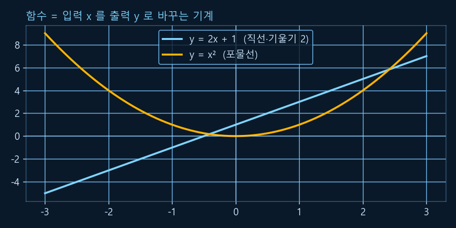
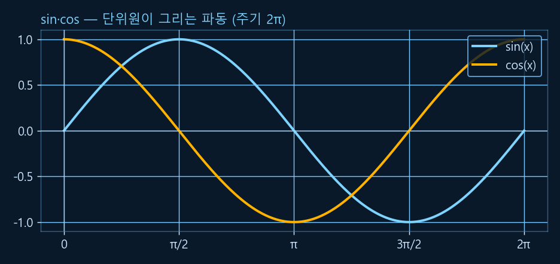
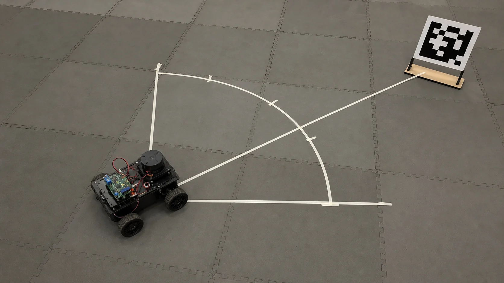
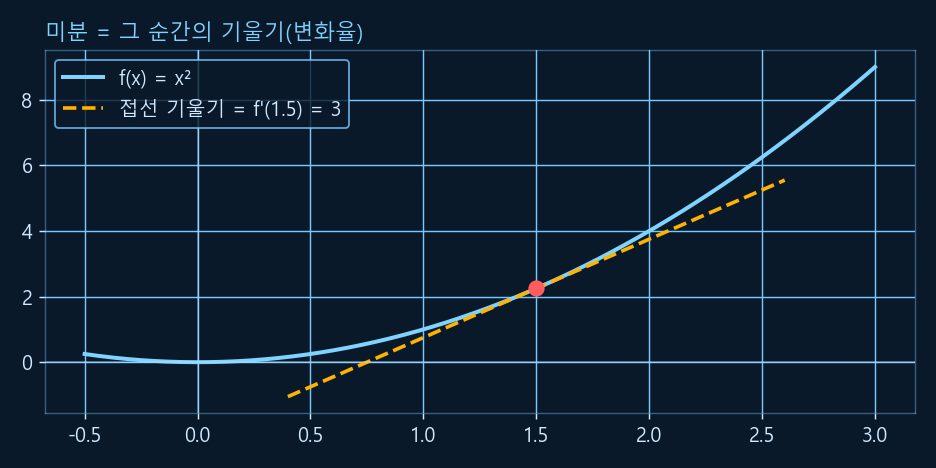
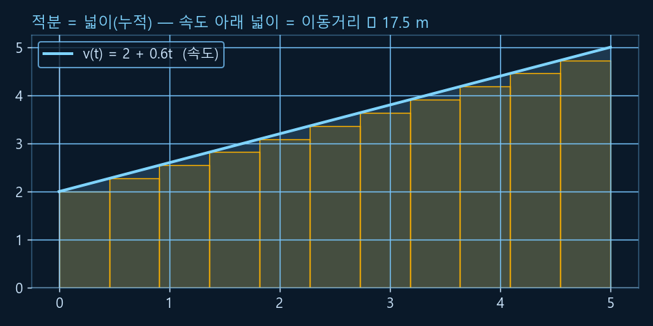
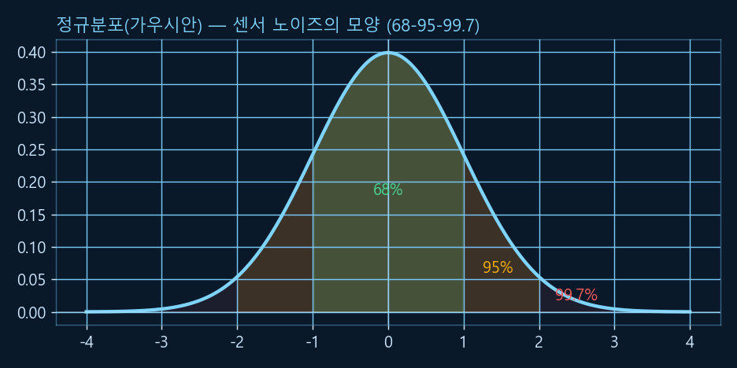

Chapter R0: 수학 리부트 — 로보틱스 선수지식
"수학을 놓은 지 오래라 앞이 캄캄하다" — 괜찮습니다. 이 챕터는 증명 없이, 직관 · 그림 · 코드로 필요한 수학만 골라 다시 깔아 줍니다. 수·식·함수 같은 밑바닥부터 시작해 각도·삼각함수, 벡터, 행렬, 미분·적분의 직관, 그리고 확률·정규분포까지 — R1~R10 어디서든 다시 펴 보는 참고서로 쓰세요. 모든 코드와 그래프는 Python(numpy·matplotlib)으로 실제 실행·검증했습니다.
1. 수와 기호 — 다시 친해지기
수식이 무서운 건 내용보다 기호 때문일 때가 많습니다. 로보틱스 글에 자주 나오는 기호만 먼저 친해지면 절반은 해결됩니다.
💡 비유로 이해하기: 기호는 "줄임말"일 뿐
θ(세타)는 "각도", Σ(시그마)는 "다 더해라", Δ(델타)는 "변화량(차이)"의 줄임말입니다. 외국어 단어처럼 처음엔 낯설지만, 뜻만 알면 문장이 술술 읽힙니다. 수식은 "압축된 한국어"라고 생각하세요.
| 기호 | 읽기 | 뜻 / 로보틱스에서 |
|---|---|---|
| θ, φ, ψ | 세타·파이·프사이 | 각도(회전량). 로봇의 방향·관절 각. |
| π | 파이 | 원주율 ≈ 3.14159. 각도(라디안)에 등장. |
| Σ | 시그마 | "모두 더하라"(합). 평균·내적 계산. |
| Δ | 델타 | 변화량(차이). Δt = 시간 간격, Δx = 위치 변화. |
| x⃗, v | 벡터 x, v | 화살표/굵은 글씨 = 벡터(크기+방향). |
| x², √x | 제곱·제곱근 | 거리(피타고라스)에서 자주 등장. |
단위도 약속입니다. 로보틱스는 국제단위(SI)를 씁니다 — 길이 미터(m), 시간 초(s), 각도 라디안(rad). "cm로 쟀는데 코드가 이상해요"의 90%는 단위 불일치입니다. 항상 단위를 통일하세요.
2. 함수와 좌표평면 — 입력을 출력으로
함수는 "입력을 넣으면 출력이 나오는 기계"입니다. f(x) = 2x + 1은 "x를 넣으면 2배 하고 1을 더해 돌려주는 기계"죠. 입력 x와 출력 y를 좌표평면(가로 x축, 세로 y축)에 점으로 찍어 이으면 그래프가 됩니다.
💡 비유로 이해하기: 함수 = 자판기
버튼(입력 x)을 누르면 정해진 음료(출력 y)가 나옵니다. 같은 버튼엔 항상 같은 음료 — 그게 함수의 약속입니다. 로봇 제어도 결국 "센서값(입력)을 넣으면 모터 명령(출력)이 나오는 함수"를 설계하는 일입니다.

y = 2x + 1은 일정한 기울기(2)로 곧게 올라가고, 포물선 y = x²는 점점 가팔라집니다. "기울기"가 곧 다음에 배울 미분의 씨앗입니다.기울기(slope)는 "x가 1 늘 때 y가 얼마나 변하나"입니다. 직선 y = 2x + 1의 기울기는 2 — 어디서나 일정합니다. 포물선은 위치마다 기울기가 달라지죠(왼쪽은 내려가고 오른쪽은 올라감). 이 "위치마다 다른 기울기"를 다루는 게 미분(11절)입니다.
3. 지수와 로그 — 가볍게 짚기
지수는 "같은 수를 여러 번 곱하기"입니다. 2³ = 2×2×2 = 8. 로그는 그 반대 질문 — "2를 몇 번 곱해야 8이 되지?" → log₂8 = 3. 로그는 "큰 수를 다루기 쉬운 크기로 줄여 주는 자"라고 보면 됩니다.
💡 비유로 이해하기: 지수 = 눈덩이, 로그 = 자릿수 세기
지수는 굴릴수록 커지는 눈덩이(폭발적 증가), 로그는 "0이 몇 개냐"로 크기를 재는 자입니다. 로보틱스에서는 지수 감쇠가 자주 등장합니다 — 필터에서 "오래된 측정값일수록 가중치를 지수적으로 줄여 잊는다"(R2 센서 필터). 자연상수 e ≈ 2.718은 이런 부드러운 증가·감쇠의 기본 단위입니다.
지금은 "지수 = 반복 곱(빨리 커짐), 로그 = 그 역(크기를 압축)" 정도만 기억하면 충분합니다. 깊은 내용은 필요할 때(R2 필터, 확률) 다시 꺼내 씁니다.
4. 각도 — 도(°)와 라디안(rad)
우리는 보통 각도를 도(degree)로 씁니다(직각 = 90°, 한 바퀴 = 360°). 하지만 로보틱스·수학·numpy는 거의 라디안(radian)을 씁니다. 라디안은 "반지름 1인 원에서 호의 길이로 잰 각도"입니다 — 한 바퀴 = 2π(≈6.283) 라디안.
(cos θ, sin θ)입니다 — 다음 절의 삼각함수가 여기서 나옵니다.변환 공식은 비례식 하나면 됩니다: 180° = π rad. 그래서 라디안 = 도 × π / 180, 도 = 라디안 × 180 / π. numpy는 np.radians() · np.degrees()로 바꿔 줍니다. 왜 라디안? — 미분·적분과 원운동 공식이 라디안에서 가장 깔끔해지기 때문입니다. (실무 팁: 코드에서는 라디안으로 계산하고, 사람에게 보여줄 때만 도로 바꾸세요.)
5. 삼각함수 — sin · cos · tan
삼각함수는 "각도를 길이(비율)로 바꿔 주는 함수"입니다. 단위원에서 각 θ가 가리키는 점의 가로 좌표가 cos θ, 세로 좌표가 sin θ입니다. tan θ = sin θ / cos θ(기울기).
💡 비유로 이해하기: 관람차 탄 사람의 그림자
관람차(단위원)를 일정하게 도는 사람을 옆에서 보면, 그 사람의 높이는 위아래로 물결치며 변합니다 — 이게 sin 곡선입니다. 정면에서 본 좌우 위치는 cos 곡선이죠. 회전(각도)이 자연스럽게 주기적인 파동으로 바뀝니다. 로봇의 바퀴 회전·관절 운동·진동이 모두 이 파동으로 표현됩니다.

sin(파랑)과 cos(주황)은 같은 모양이 π/2만큼 어긋난 파동입니다. 둘 다 −1 ~ +1 사이를 2π 주기로 오갑니다.import numpy as np
# numpy의 sin/cos는 '라디안'을 입력으로 받는다 (도 아님!)
# round로 표시 정리 (컴퓨터는 0.4999999...처럼 미세 오차가 날 수 있음)
print(round(np.sin(np.radians(30)), 4)) # 30도의 sin = 0.5
print(round(np.cos(np.radians(60)), 4)) # 60도의 cos = 0.5
# 단위원: 각 θ의 점 = (cos θ, sin θ)
theta = np.radians(45)
점 = np.array([np.cos(theta), np.sin(theta)])
print(np.round(점, 4)) # [0.7071 0.7071] (= √2/2)✅ 실행 결과 (검증됨)
0.5 0.5 [0.7071 0.7071]
⚠️ 가장 흔한 실수: np.sin(30)은 "30도"가 아니라 "30라디안"의 sin입니다. 항상 np.radians()로 바꿔 넣으세요.
6. atan2 — 좌표에서 각도 거꾸로 구하기
삼각함수가 "각도 → 좌표"라면, 로봇은 그 반대도 자주 필요합니다 — "점 (x, y)는 어느 방향이지?"(각도 구하기). 이때 쓰는 게 atan2(y, x)입니다.
💡 비유로 이해하기: atan2 = "어느 쪽을 봐야 하나"
로봇이 (0,0)에 있고 목표가 (3, 4)에 있다면, "몸을 어느 각도로 틀어야 목표를 정면으로 보나?"의 답이 atan2(4, 3)입니다. 그냥 atan(y/x)를 쓰지 않는 이유는, 나눗셈을 하면 사분면 정보(앞/뒤·좌/우)가 사라지기 때문입니다. atan2는 x·y의 부호를 따로 보고 −180°~+180° 전 범위의 정확한 방향을 줍니다.

atan2(y, x)가 해 줍니다.import numpy as np
# (0,0)에서 각 방향의 각도 — atan2(y, x)
print(np.degrees(np.arctan2(1, 1))) # 1사분면(↗): 45.0
print(np.degrees(np.arctan2(1, -1))) # 2사분면(↖): 135.0 (atan이면 -45로 틀림!)
# 로봇 (1,1) → 목표 (4,5) 를 향하는 방향
A = np.array([1.0, 1.0]); B = np.array([4.0, 5.0])
dx, dy = B - A
print(np.degrees(np.arctan2(dy, dx))) # 53.13... 도✅ 실행 결과 (검증됨)
45.0 135.0 53.13010235415598
atan2는 로보틱스에서 가장 많이 쓰는 삼각함수 중 하나입니다 — 목표 방향, 회전 각도, 자세 추정 어디서나 등장합니다.
7. 벡터 — 크기와 방향을 함께
"북동쪽으로 5m"처럼 크기와 방향이 같이 있는 양이 벡터입니다. 숫자 하나(스칼라)로는 못 적고, 좌표 성분으로 적습니다: v = (3, 4). 화살표로 그리면 직관적이죠.
√(9+16) = 5입니다.벡터끼리는 더하기(화살표 이어 붙이기)와 스칼라배(길이 늘이기/줄이기)가 됩니다. 길이를 1로 맞춘 벡터를 단위벡터라 하고, "방향만" 필요할 때 씁니다(원래 벡터를 그 크기로 나눔).
import numpy as np
v = np.array([3.0, 4.0])
print("크기(노름):", np.linalg.norm(v)) # 5.0
print("단위벡터:", np.round(v / np.linalg.norm(v), 2)) # [0.6 0.8] (방향만, 길이 1)
a = np.array([1.0, 2.0]); b = np.array([3.0, 1.0])
print("덧셈 a+b:", a + b) # [4. 3.]
print("스칼라배 2a:", 2 * a) # [2. 4.]✅ 실행 결과 (검증됨)
크기(노름): 5.0 단위벡터: [0.6 0.8] 덧셈 a+b: [4. 3.] 스칼라배 2a: [2. 4.]
8. 내적과 외적 — 두 벡터의 관계
두 벡터가 주어지면 두 가지 핵심 질문이 생깁니다. 내적(dot): "둘이 얼마나 같은 방향인가?" 외적(cross): "둘이 만드는 평면의 수직 방향(회전축)은?"
💡 비유로 이해하기: 내적 = 정렬도 점수, 외적 = 회전축 손가락
내적은 두 화살표가 나란할수록 큰 값, 수직이면 0, 반대면 음수 — "같은 방향 점수"입니다. 그래서 내적이 0이면 두 벡터는 직각(수직)입니다. 외적은 오른손 법칙 — 오른손으로 첫 벡터에서 둘째 벡터로 감아쥘 때 엄지가 가리키는 방향이 결과입니다(회전축·법선). 외적은 3차원에서 정의됩니다.
import numpy as np
u = np.array([1.0, 0.0]) # +x 방향
v = np.array([0.0, 1.0]) # +y 방향
print("내적 u·v:", np.dot(u, v)) # 0 → 두 벡터는 수직!
# 두 벡터 사이 각도 = arccos(내적 / (크기 곱))
cos_t = np.dot(u, v) / (np.linalg.norm(u) * np.linalg.norm(v))
print("사이 각(도):", np.degrees(np.arccos(cos_t))) # 90.0
# 외적 (3차원) — 오른손 법칙, x × y = z
x = np.array([1.0, 0.0, 0.0]); y = np.array([0.0, 1.0, 0.0])
print("외적 x×y:", np.cross(x, y)) # [0. 0. 1.]✅ 실행 결과 (검증됨)
내적 u·v: 0.0 사이 각(도): 90.0 외적 x×y: [0. 0. 1.]
9. 행렬 — 숫자표이자 '변환 기계'
행렬은 숫자를 격자로 늘어놓은 표입니다. 하지만 로보틱스에서 더 중요한 정체는 "벡터를 다른 벡터로 바꾸는 기계"라는 점입니다 — 행렬에 벡터를 곱하면 그 벡터가 회전·확대·이동됩니다.
💡 비유로 이해하기: 행렬 = 사진 필터
사진(벡터들)에 필터(행렬)를 씌우면 회전되거나 늘어나거나 비틀립니다. 같은 필터는 모든 점에 똑같은 규칙으로 적용되죠. R1의 회전행렬은 "모든 점을 같은 각도로 돌리는 필터"이고, 동차변환행렬 SE(3)는 "돌리고 + 옮기는 필터"입니다. 행렬을 이해하면 R1이 쉬워집니다.
아무 변화도 주지 않는 행렬이 항등행렬 I입니다(대각선만 1). "곱해도 그대로" — 숫자의 1과 같은 역할이죠.
import numpy as np
# 이 행렬은 'x는 2배, y는 3배 늘이는' 변환 기계
S = np.array([[2.0, 0.0],
[0.0, 3.0]])
p = np.array([1.0, 1.0])
print("변환된 점 S·p:", S @ p) # [2. 3.] (x→2, y→3)
# 항등행렬 I: 곱해도 그대로 (숫자의 1과 같은 역할)
I = np.eye(2)
print("I·p:", I @ p) # [1. 1.]✅ 실행 결과 (검증됨)
변환된 점 S·p: [2. 3.] I·p: [1. 1.]
10. 행렬곱 · 전치 · 역행렬 · 행렬식
행렬에는 네 가지 핵심 연산이 있고, 각각 기하적 의미가 있습니다.
- 행렬곱 (A @ B): 변환을 이어서 적용(먼저 B, 그 다음 A). 순서가 중요합니다(보통 A@B ≠ B@A).
- 전치 (A.T): 행과 열을 뒤집기. 회전행렬에선 전치가 곧 역회전이라 아주 유용합니다(R1).
- 역행렬 (A⁻¹): 변환을 되돌리는 행렬.
A @ A⁻¹ = I. - 행렬식 (det): 그 변환이 넓이/부피를 몇 배로 바꾸는지. det=0이면 납작하게 찌부러져 되돌릴 수 없음(역행렬 없음), 음수면 뒤집힘(거울 반사).
import numpy as np
A = np.array([[2.0, 0.0],
[0.0, 3.0]])
print("전치 A.T:\n", A.T)
print("행렬식 det(A):", np.linalg.det(A)) # 6.0 (넓이 2×3 = 6배)
print("역행렬 A^-1:\n", np.round(np.linalg.inv(A), 3)) # [[0.5,0],[0,0.333]]
print("A @ A^-1 = I?", np.allclose(A @ np.linalg.inv(A), np.eye(2))) # True✅ 실행 결과 (검증됨)
전치 A.T: [[2. 0.] [0. 3.]] 행렬식 det(A): 6.0 역행렬 A^-1: [[0.5 0. ] [0. 0.333]] A @ A^-1 = I? True
이 네 연산이 R1의 회전행렬·동차변환의 토대입니다. "행렬식 = 넓이 배율", "역행렬 = 되돌리기"만 기억해도 충분합니다.
11. 미분 — 그 순간의 변화율(기울기)
미분은 "지금 이 순간, 얼마나 빨리 변하나?"를 재는 도구입니다. 그래프에서는 그 점에서의 기울기(접선)이고, 물리에서는 위치를 미분하면 속도, 속도를 미분하면 가속도입니다.
💡 비유로 이해하기: 자동차 계기판의 속도계
주행거리(위치)는 천천히 쌓이지만, 속도계는 "지금 이 순간" 얼마나 빨리 가는지를 보여줍니다 — 그게 미분입니다. 위치 그래프가 가파를수록(기울기 큼) 속도가 빠른 거죠. 로봇은 엔코더로 잰 위치를 미분해 속도를 얻고, 그 속도로 모터를 제어합니다(R5).

f(x) = x² 위 한 점(x=1.5)에서의 접선 기울기 = 미분값 f'(1.5) = 3. 곡선의 "그 순간 가파른 정도"가 미분입니다.import numpy as np
t = np.linspace(0, 5, 6) # 시간 0,1,2,3,4,5초
pos = t**2 # 위치 = t² (0,1,4,9,16,25)
# np.gradient: 이웃 값의 차이로 '기울기(속도)'를 수치적으로 계산
vel = np.gradient(pos, t)
print("위치:", pos)
print("속도:", vel) # 약 2t — 시간이 갈수록 빨라짐✅ 실행 결과 (검증됨)
위치: [ 0. 1. 4. 9. 16. 25.] 속도: [1. 2. 4. 6. 8. 9.]
참고: f(t)=t²의 정확한 미분은 2t(0,2,4,6,8,10)입니다. 가운데 값들은 정확히 맞고, 양 끝(처음·마지막)만 한쪽 이웃만 보고 어림하기에 1·9로 살짝 다릅니다 — 수치 미분의 자연스러운 특성입니다.
12. 적분 — 누적(넓이)
적분은 미분의 반대입니다 — "조금씩 쌓아 모두 더하기". 그래프에서는 곡선 아래 넓이이고, 물리에서는 속도를 적분하면 이동거리(위치)입니다. 로봇이 "내가 얼마나 움직였나"를 바퀴 속도로 추정하는 게 바로 적분 — 오도메트리(odometry)입니다(R4).
💡 비유로 이해하기: 물통에 물 붓기
수도꼭지의 세기(속도)가 매 순간 다르더라도, 그것을 시간에 따라 차곡차곡 더하면 물통에 찬 총량(이동거리)을 알 수 있습니다. 빠르게 흐른 구간은 많이, 천천히 흐른 구간은 조금 쌓이죠. 미분이 "쪼개기"라면 적분은 "모으기"입니다.

v(t) 아래의 넓이가 곧 이동한 거리입니다. 주황 막대처럼 잘게 쪼개 더하는 게 수치 적분의 아이디어입니다.import numpy as np
t = np.linspace(0, 5, 1000)
v = 2 + 0.6 * t # 속도 (점점 빨라짐)
# np.trapezoid: 곡선 아래 넓이를 사다리꼴로 누적 (numpy 2.0+; 옛 이름 np.trapz)
distance = np.trapezoid(v, t)
print("이동거리(넓이):", round(distance, 2)) # 17.5 m
# 검산: ∫(2 + 0.6t)dt = 2t + 0.3t² → (10 + 7.5) - 0 = 17.5
print("손으로 검산:", 2*5 + 0.3*5**2) # 17.5✅ 실행 결과 (검증됨)
이동거리(넓이): 17.5 손으로 검산: 17.5
13. 평균 · 분산 · 표준편차 — 흩어짐 재기
센서는 똑같은 값을 재도 매번 조금씩 다릅니다(노이즈). 이 "흩어짐"을 다루는 게 통계입니다. 평균은 가운데 값, 분산·표준편차는 "평균에서 얼마나 퍼져 있나"입니다(표준편차 = √분산, 단위가 원래 값과 같아 직관적).
💡 비유로 이해하기: 과녁의 탄착군
평균은 "탄착 중심", 표준편차는 "탄착군이 얼마나 퍼졌나"입니다. 좋은 센서는 표준편차가 작아(촘촘) 믿을 만하고, 나쁜 센서는 넓게 퍼집니다. 로봇은 이 "퍼짐"을 알아야 여러 측정을 똑똑하게 합칠 수 있습니다(R9 칼만 필터의 핵심).
import numpy as np
# 거리 센서가 같은 벽을 6번 잰 값 (단위 m) — 매번 조금씩 다름
data = np.array([2.0, 2.1, 1.9, 2.2, 1.8, 2.0])
print("평균:", data.mean()) # 2.0 (가장 그럴듯한 실제 거리)
print("분산:", round(data.var(), 5))
print("표준편차:", round(data.std(), 4)) # ≈0.129 m 만큼 퍼져 있음✅ 실행 결과 (검증됨)
평균: 2.0 분산: 0.01667 표준편차: 0.1291
14. 정규분포 — 센서 노이즈의 모양
대부분의 센서 노이즈는 정규분포(가우시안, 종 모양)를 따릅니다 — 평균 근처가 가장 흔하고 멀어질수록 드뭅니다. 이 종 모양은 평균(중심)과 표준편차(폭) 두 숫자로 완전히 정해집니다.

import numpy as np
def gaussian(x, mu, sigma):
"""정규분포 확률밀도함수 (종 모양 곡선의 높이)."""
return np.exp(-0.5 * ((x - mu) / sigma)**2) / (sigma * np.sqrt(2 * np.pi))
mu, sigma = 0.0, 1.0
print("중심(평균)에서 가장 높다:", round(float(gaussian(mu, mu, sigma)), 4)) # 0.3989
# ±1σ 안에 약 68%가 들어오는지 촘촘히 적분해 확인
x = np.linspace(-1, 1, 100001)
prob = np.trapezoid(gaussian(x, mu, sigma), x)
print("±1σ 구간 확률:", round(float(prob), 4)) # ≈ 0.6827 (68%)✅ 실행 결과 (검증됨)
중심(평균)에서 가장 높다: 0.3989 ±1σ 구간 확률: 0.6827
정규분포는 R2(센서 노이즈 모델), R9(칼만·파티클 필터)의 심장입니다. "노이즈는 종 모양, 평균·표준편차로 요약된다"만 확실히 잡고 가면 됩니다.
15. 한 장 요약 — 무엇을 · 어디서 쓰나
| 도구 | 한 줄 직관 | numpy | 쓰이는 곳 |
|---|---|---|---|
| 각도(라디안) | 180° = π rad, 코드는 라디안 | np.radians / np.degrees | R1·R4 회전 |
| sin · cos | 각도 → 단위원 위 좌표 | np.sin / np.cos | R1 회전행렬 |
| atan2 | 좌표 → 방향(각도) | np.arctan2(y, x) | R4 방향, 자세 |
| 벡터 | 크기 + 방향 | norm · dot · cross | R1 위치·속도 |
| 행렬 | 벡터를 바꾸는 변환 기계 | @ · .T · inv · det | R1 SE(3) 변환 |
| 미분 | 순간 변화율(기울기) = 속도 | np.gradient | R5 제어 |
| 적분 | 누적(넓이) = 이동거리 | np.trapezoid | R4 오도메트리 |
| 평균·표준편차 | 중심과 흩어짐 | .mean() · .std() | R2 센서 |
| 정규분포 | 노이즈의 종 모양 | np.exp(...) | R9 칼만 필터 |
전부 외울 필요 없습니다. "이런 도구가 있고, 로봇의 이런 상황에서 쓴다"는 감만 잡으면, 각 챕터에서 필요할 때 이 표로 돌아오면 됩니다. 이제 R1(로보틱스 입문 & 선형대수)로 자신 있게 들어가세요. 💪